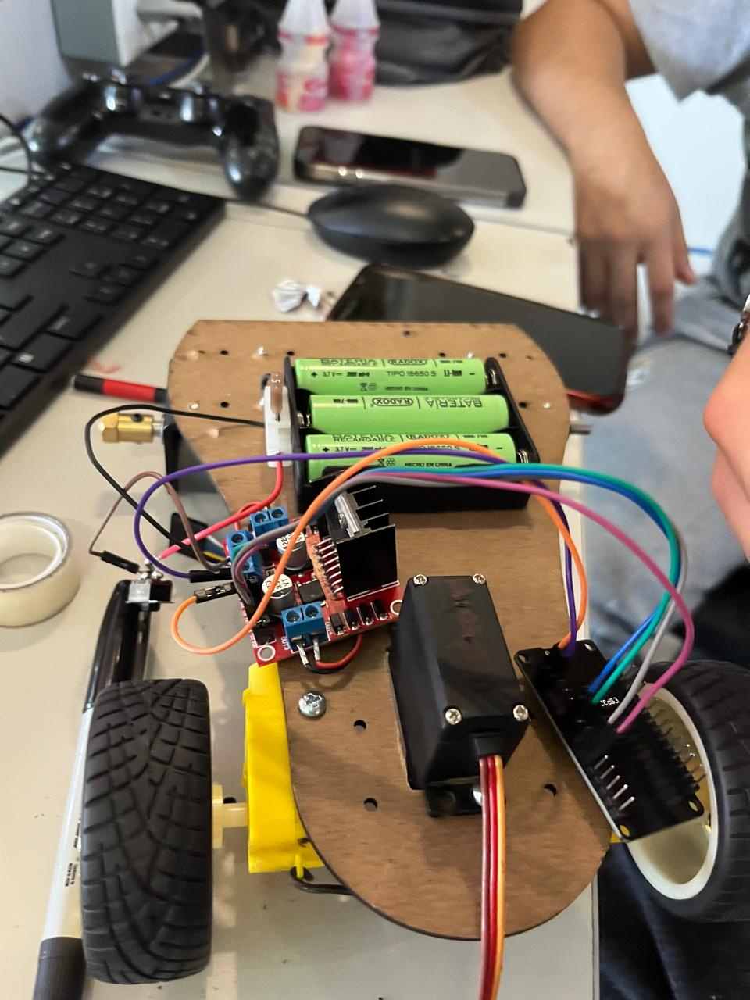
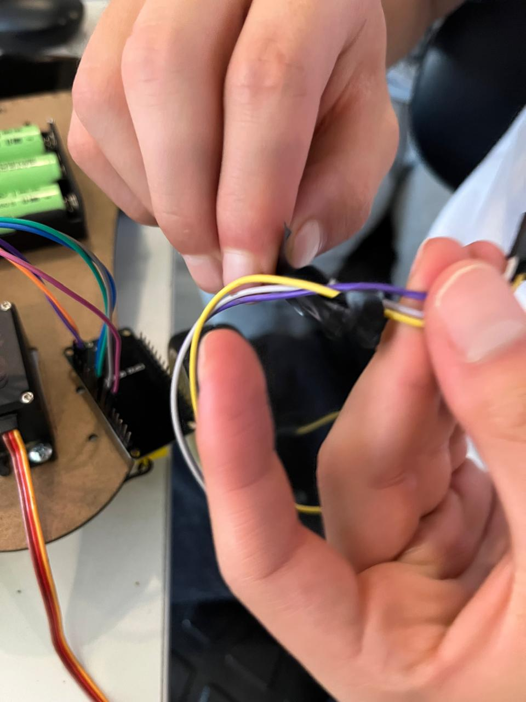
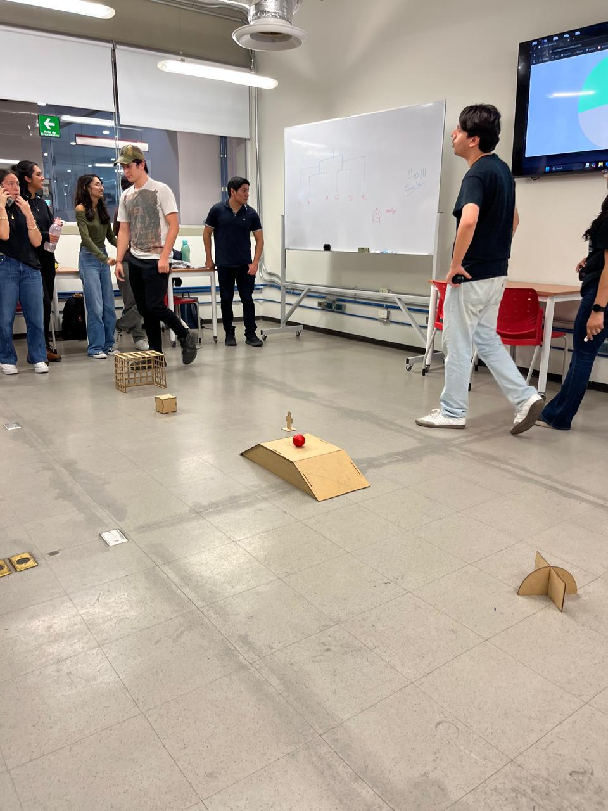
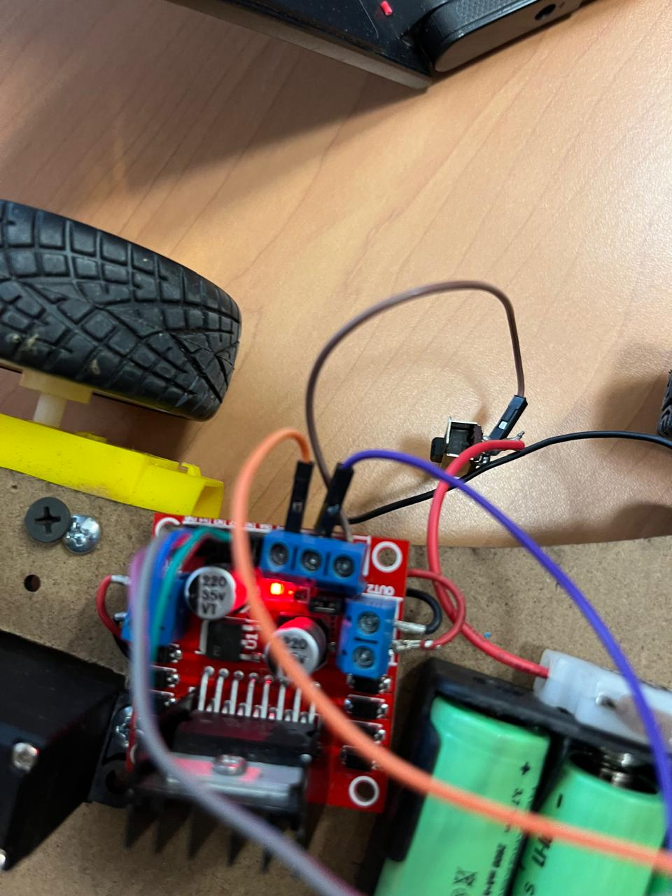
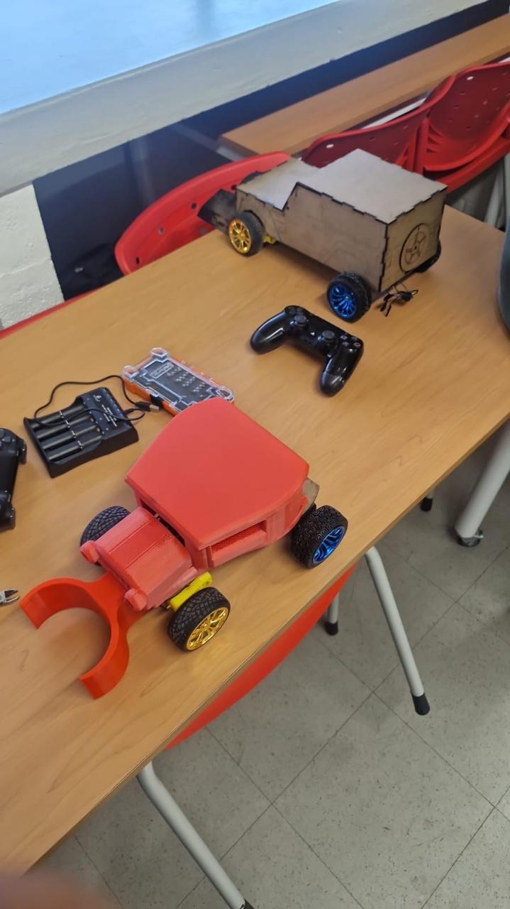
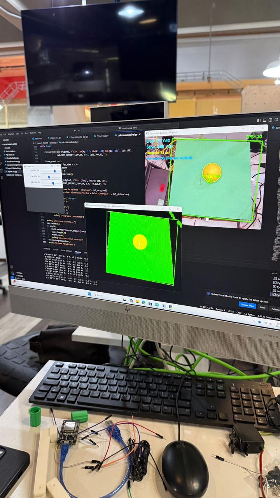
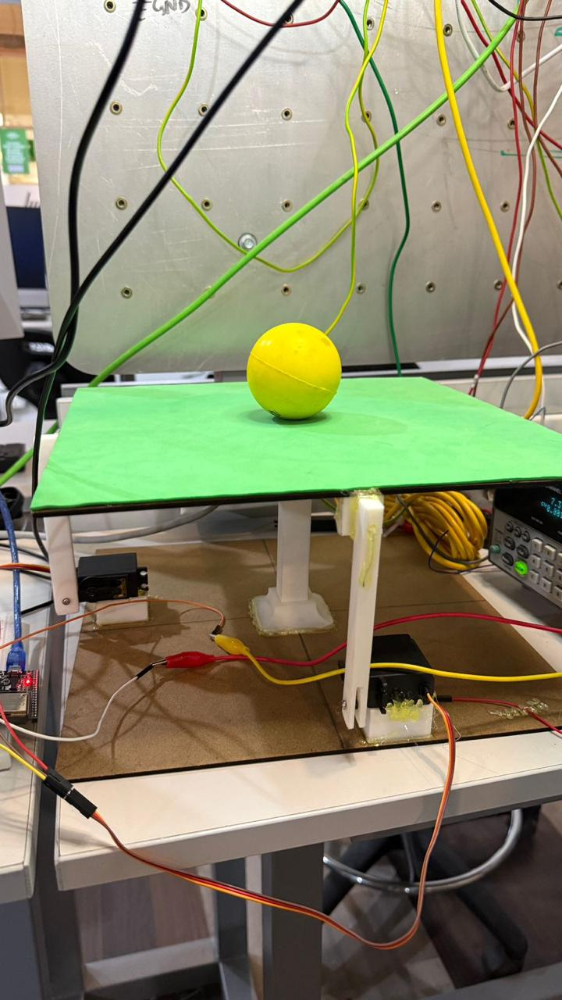
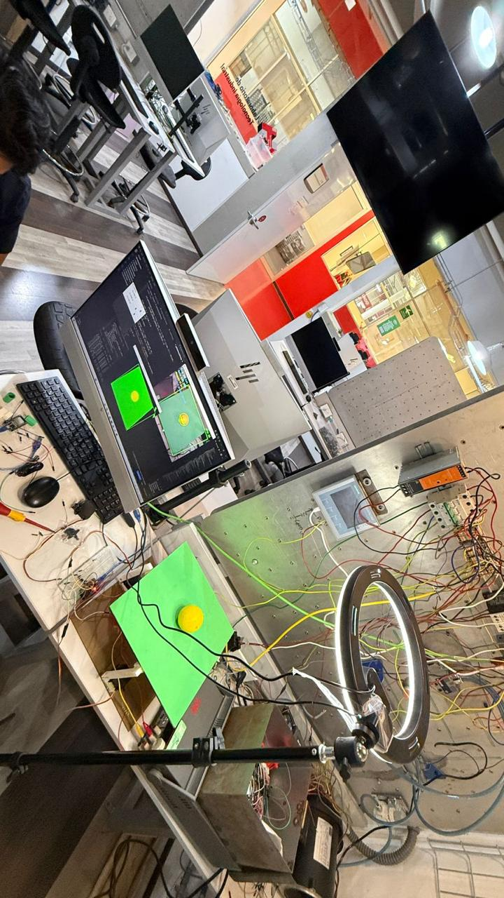
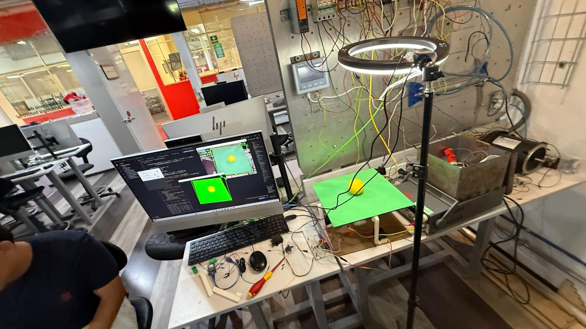

PROYECTOS
Proyecto de mitad de semestre - Partido de coches
Introduccion
El presente proyecto se desarrolló en el marco del desafío de la asignatura, que consistía en diseñar y construir un vehículo teledirigido para la competencia de "Fútbol de Coches". El objetivo principal fue crear una plataforma móvil con el microcontrolador ESP32 capaz de ejecutar movimientos precisos (avance, retroceso y giro) controlados de forma inalámbrica. Esto garantizó una interfaz de usuario intuitiva y una alta maniobrabilidad necesaria en el campo de juego.
Marco Teorico
-
Microcontrolador ESP32 Se eligió la ESP32 por su arquitectura de doble núcleo, alta velocidad de procesamiento y, crucialmente, su capacidad de comunicación inalámbrica integrada. Esta capacidad permitió la recepción de comandos en tiempo real desde el control de PlayStation, actuando como el cerebro del sistema para interpretar las señales y traducirlas en comandos de movimiento para los motores.
-
Driver de Motor L298N El microcontrolador ESP32 no puede suministrar la corriente necesaria para mover los motores DC grandes. Por ello, se utilizó el módulo L298N, un driver de motor de puente H doble.
-
Control Inalámbrico (Mando de PlayStation y Bluetooth/Wi-Fi) La comunicación se estableció mediante la vinculación del mando de PlayStation con la ESP32 (generalmente a través de Bluetooth o un protocolo de baja latencia similar), utilizando el entorno de programación de Arduino.
-
Tracción Diferencial Para lograr el giro, se implementó un sistema de tracción diferencial controlando de manera independiente los dos motores traseros. Los movimientos se codificaron de la siguiente manera:
- Adelante/Atrás: Ambos motores giran a la misma velocidad en la misma dirección.
- Giro: Uno de los motores se hace girar a una velocidad mayor o menor que el otro, permitiendo que el coche pivote sutilmente hacia la izquierda o derecha. Esto se logró enviando diferentes señales PWM (Modulación por Ancho de Pulso) a cada motor a través del L298N.
Procedimiento
- Materiales y Equipo
* Microcontrolador ESP32 DevKit V1
* Puente H
* Motores DC
* Mando Inalámbrico de PlayStation
* Baterías
* Chasis de 4 ruedas
* Cables y Conectores
- Diagrama de Conexión y Montaje
El montaje siguió la siguiente secuencia lógica:
1.- Conexión de Motores al L298N: Los cuatro motores se conectaron a las salidas del L298N. Aunque el chasis tenía cuatro motores, se priorizó la conexión y control de los dos motores traseros (izquierda y derecha), permitiendo que los motores delanteros giraran libremente o estuvieran conectados en paralelo a los traseros para maximizar el empuje.
2.- Conexión de L298N al ESP32: Se utilizaron pines GPIO de la ESP32 para controlar los pines de Enable (velocidad) y los pines IN1-IN4 (dirección) del L298N.
3.- Alimentación: Las baterías se conectaron a la entrada de alimentación de potencia del L298N para motores, garantizando el voltaje adecuado.
4.- Programación: Se cargó el código en la ESP32 que incluía la lógica de lectura del control de PlayStation y la traducción de esos comandos a señales PWM específicas para los motores traseros, implementando la tracción diferencial.
Resultados
El proyecto concluyó con un vehículo completamente funcional que cumplió con todos los requisitos del torneo.
1. Verificación Funcional
Movimiento Lineal: El vehículo demostró capacidad de avanzar y retroceder de manera estable al recibir los comandos. La potencia de los motores, alimentados por las baterías Li-Po, fue suficiente para el desplazamiento en el campo.
Maniobrabilidad (Giro): El sistema de tracción diferencial fue exitoso. Al variar las señales PWM a los motores traseros, el coche logró giros precisos a la izquierda y derecha, permitiendo la navegación y posicionamiento estratégico en el campo de fútbol.
Control Inalámbrico: La conexión entre el mando de PlayStation y la ESP32 fue estable, presentando una latencia mínima que permitió un control responsivo y en tiempo real durante los partidos.
2. Desempeño en Competición
El desempeño del coche fue excepcional en el torneo de "Fútbol de Coches", validando la robustez del diseño electrónico y mecánico:
-
Resultado Final: El equipo ganó el torneo, lo que valida el diseño robusto y la programación eficiente del sistema.
-
Capacidad Ofensiva: Gracias a la pala frontal y la precisa maniobrabilidad, el coche logró un control constante del balón, resultando en la anotación de aproximadamente 4 goles, demostrando la efectividad de la implementación.
Conclusion
El proyecto de "Partido de Coches" fue un éxito técnico y funcional. Se validó la versatilidad de la ESP32 como microcontrolador central para aplicaciones IoT de control en tiempo real, combinando la comunicación inalámbrica (Bluetooth) con el control de potencia de alto rendimiento (L298N).





Proyecto final de semestre - Balance de pelota
Introduccion
Este proyecto se centró en el diseño e implementación de un sistema de control de posición en tiempo real. El objetivo fue construir una plataforma dinámica capaz de mantener una pelota centrada sobre su superficie, contrarrestando activamente la fuerza de gravedad mediante la inclinación de la base. El sistema emplea una arquitectura avanzada que combina visión por computadora (Python) para la detección de errores y el microcontrolador ESP32 para la ejecución precisa del movimiento a través de servomotores.
Marco Teórico
El proyecto se sustenta en tres pilares tecnológicos: la visión por computadora para la detección de errores, el protocolo de comunicación inalámbrica y la teoría de control.
1. Visión por Computadora y Detección de Posición
Se utilizó Python junto con bibliotecas especializadas (como OpenCV) para capturar el stream de video de la cámara.
-
Procesamiento: El código identifica el color o las características de la pelota, calcula sus coordenadas (x, y) en la imagen y determina la posición central de la plataforma.
-
Error: El Error de Posición se calcula como la diferencia entre la posición actual de la pelota y el punto central deseado, siendo la entrada principal para el algoritmo de control.
2. Protocolo de Comunicación Bluetooth
Para transmitir los datos del error calculados por la PC (Python) al hardware (ESP32), se empleó la comunicación Bluetooth. Esta elección garantizó una conexión inalámbrica de baja latencia necesaria para las tareas de control en tiempo real, enviando los valores del error "x" y "y" de manera continua.
3. Control de Inclinación (Servomotores)
Los servomotores fueron elegidos como actuadores por su capacidad de posicionamiento angular preciso.
-
Función: La ESP32 recibe el error y lo traduce en ángulos de inclinación , para los dos servomotores, que controlan los ejes X y Y de la plataforma.
-
Control (PID): La relación entre el error de posición y los ángulos de los servomotores generalmente se maneja mediante un algoritmo de control Proporcional-Integral-Derivativo (PID), aunque la implementación básica puede usar solo control Proporcional. El objetivo es que, si la pelota se mueve en la dirección X positiva, la plataforma se incline en la dirección X negativa para corregir el movimiento.
Procedimiento
- Materiales
- Microcontrolador ESP32 DevKit V
- Computadora Host
- Cámara Webcam USB
- 2 Servomotores
- Base de equilibrio (acrílico, madera) y mecanismos de acoplamiento para los servos.
- Módulo de Bluetooth Integrado (en ESP32)
- Software Python y Arduino IDE (para el código del ESP32).
- Diagrama de Conexión y Montaje
-
Montaje Mecánico: La plataforma se montó sobre los dos servomotores, permitiendo el movimiento independiente en los dos ejes de inclinación.
-
Cableado: Los dos servomotores se conectaron a pines PWM digitales específicos del ESP32 para permitir el control de ángulo.
-
Flujo de Datos (Python a ESP32):
-
La cámara captura la imagen.
- Python procesa la imagen, calcula el error de posición.
- Python envía los valores x,y a través de Bluetooth.
- El código de Arduino (en la ESP32) recibe estos valores.
- La ESP32 utiliza estos valores para calcular el ángulo de corrección de los servomotores.
Codigo de Python
#PruebaBUENA - Modificado: Pelota AMARILLA y Plataforma VERDE
import cv2
import time
import numpy as np
import serial
import serial.tools.list_ports
# ------------------- Configuración Serial Bluetooth -------------------
esp32_port = 'COM14'
baud_rate = 115200
print("=" * 50)
print("Intentando conectar con ESP32...")
print(f"Puerto: {esp32_port} | Baudios: {baud_rate}")
def listar_puertos():
puertos = serial.tools.list_ports.comports()
print("\n Puertos COM disponibles:")
if len(puertos) == 0:
print(" No se encontraron puertos COM")
for puerto in puertos:
print(f" • {puerto.device}: {puerto.description}")
print()
listar_puertos()
try:
esp32 = serial.Serial(esp32_port, baud_rate, timeout=1)
time.sleep(2)
print(f" ¡Conectado al ESP32 en {esp32_port}!")
except serial.SerialException as e:
print(f" Error de conexión serial: {e}")
esp32 = None
except Exception as e:
print(f" Error inesperado: {e}")
esp32 = None
print("=" * 50)
# ------------------- Configuración cámara -------------------
cap = cv2.VideoCapture(1)
cap.set(cv2.CAP_PROP_FRAME_WIDTH, 640)
cap.set(cv2.CAP_PROP_FRAME_HEIGHT, 480)
if not cap.isOpened():
print("Error: No se pudo abrir la cámara")
exit()
# ------------------- Posición inicial servos -------------------
center_angle = 90
current_x = center_angle
current_y = center_angle
DEAD_ZONE = 15 # Zona muerta reducida
smoothing = 0.3 # Suavizado reducido para respuesta más rápida
# ------------------- Parámetros PID ajustables -------------------
Kp = 0.15
Ki = 0.001
Kd = 0.20
prev_error_x = 0
prev_error_y = 0
integral_x = 0
integral_y = 0
MAX_INTEGRAL = 50
# ------------------- Parámetros de detección -------------------
# Rango HSV para plataforma VERDE (modificado)
LOW_GREEN = np.array([35, 40, 40]) # H: 35-85 (verde), S: mínimo 40, V: mínimo 40
HIGH_GREEN = np.array([85, 255, 255]) # Rango amplio para captar diferentes tonos de verde
AREA_MIN_PLATAFORMA = 1000 # Área mínima del cuadrado
# Rango HSV para pelota AMARILLA (modificado)
LOW_YELLOW = np.array([20, 100, 100]) # H: 20-35 (amarillo), S: mínimo 100, V: mínimo 100
HIGH_YELLOW = np.array([35, 255, 255]) # Cubre tonos amarillos brillantes
AREA_MIN_PELOTA = 200
RADIO_MIN_PELOTA = 8
# ------------------- Función para limitar valores -------------------
def constrain(value, min_val, max_val):
return max(min_val, min(max_val, value))
# ------------------- Callbacks para sliders -------------------
def update_kp(val):
global Kp
Kp = val / 100.0 # Slider 0-100, valor real 0.00-1.00
print(f"Kp = {Kp:.3f}")
def update_ki(val):
global Ki
Ki = val / 1000.0 # Slider 0-100, valor real 0.000-0.100
print(f"Ki = {Ki:.4f}")
def update_kd(val):
global Kd
Kd = val / 100.0 # Slider 0-100, valor real 0.00-1.00
print(f"Kd = {Kd:.3f}")
# ------------------- Crear ventana de control -------------------
cv2.namedWindow('Control PID')
cv2.createTrackbar('Kp x100', 'Control PID', int(Kp * 100), 100, update_kp)
cv2.createTrackbar('Ki x1000', 'Control PID', int(Ki * 1000), 100, update_ki)
cv2.createTrackbar('Kd x100', 'Control PID', int(Kd * 100), 100, update_kd)
prev_time = time.time()
print("=" * 50)
print("Sistema de Balance: Plataforma VERDE + Pelota AMARILLA")
print("=" * 50)
print("CONFIGURACIÓN:")
print(f" • Centro servos: {center_angle}° (Rango: 0-180°)")
print(f" • Zona muerta: ±{DEAD_ZONE} píxeles")
print(f" • Suavizado: {smoothing}")
print(f" • PID: Kp={Kp} Ki={Ki} Kd={Kd}")
print("\nDETECCIÓN:")
print(" • PLATAFORMA VERDE (HSV): Detecta área más grande de tonos verdes")
print(f" Rango H: {LOW_GREEN[0]}-{HIGH_GREEN[0]} | S: {LOW_GREEN[1]}-{HIGH_GREEN[1]} | V: {LOW_GREEN[2]}-{HIGH_GREEN[2]}")
print(" • PELOTA AMARILLA: Posición para calcular error")
print(f" Rango H: {LOW_YELLOW[0]}-{HIGH_YELLOW[0]} | S: {LOW_YELLOW[1]}-{HIGH_YELLOW[1]} | V: {LOW_YELLOW[2]}-{HIGH_YELLOW[2]}")
print("\nCONTROLES:")
print(" • 'q' → Salir")
print(" • 'c' → Resetear integrales")
print(" • Sliders → Ajustar PID en tiempo real")
print("=" * 50)
frame_count = 0
fps_time = time.time()
fps = 0
while True:
ret, frame = cap.read()
if not ret:
print("Error: No se pudo leer frame de la cámara")
break
frame = cv2.flip(frame, 1)
height, width = frame.shape[:2]
centrox, centroy = width//2, height//2
# ===============================================================
# DETECCIÓN 1: PLATAFORMA VERDE (HSV) - ÁREA MÁS GRANDE
# ===============================================================
hsv_plat = cv2.cvtColor(frame, cv2.COLOR_BGR2HSV)
# Máscara para detectar verde
mask_plataforma = cv2.inRange(hsv_plat, LOW_GREEN, HIGH_GREEN)
kernel_plat = np.ones((7,7), np.uint8)
mask_plataforma = cv2.morphologyEx(mask_plataforma, cv2.MORPH_CLOSE, kernel_plat)
mask_plataforma = cv2.morphologyEx(mask_plataforma, cv2.MORPH_OPEN, kernel_plat)
mask_plataforma = cv2.dilate(mask_plataforma, kernel_plat, iterations=1)
contours_plat, _ = cv2.findContours(mask_plataforma, cv2.RETR_EXTERNAL, cv2.CHAIN_APPROX_SIMPLE)
area_max_plat = 0
contorno_plat = None
centro_plataforma = None
rectangulo_info = None
for c in contours_plat:
area = cv2.contourArea(c)
if area > area_max_plat and area > AREA_MIN_PLATAFORMA:
area_max_plat = area
contorno_plat = c
rectangulo_info = cv2.minAreaRect(c)
M = cv2.moments(c)
if M["m00"] != 0:
cx_plat = int(M["m10"] / M["m00"])
cy_plat = int(M["m01"] / M["m00"])
centro_plataforma = (cx_plat, cy_plat)
# ===============================================================
# DETECCIÓN 2: PELOTA AMARILLA
# ===============================================================
hsv = cv2.cvtColor(frame, cv2.COLOR_BGR2HSV)
mask_pelota = cv2.inRange(hsv, LOW_YELLOW, HIGH_YELLOW)
kernel_pelota = np.ones((5,5), np.uint8)
mask_pelota = cv2.morphologyEx(mask_pelota, cv2.MORPH_OPEN, kernel_pelota)
mask_pelota = cv2.morphologyEx(mask_pelota, cv2.MORPH_CLOSE, kernel_pelota)
mask_pelota = cv2.dilate(mask_pelota, kernel_pelota, iterations=1)
contours_pelota, _ = cv2.findContours(mask_pelota, cv2.RETR_EXTERNAL, cv2.CHAIN_APPROX_SIMPLE)
area_max_pelota = 0
contorno_pelota = None
centro_pelota = None
radio_pelota = 0
for c in contours_pelota:
area = cv2.contourArea(c)
if area > area_max_pelota:
area_max_pelota = area
contorno_pelota = c
(x_pel, y_pel), radio_pelota = cv2.minEnclosingCircle(c)
if radio_pelota > RADIO_MIN_PELOTA and area > AREA_MIN_PELOTA:
centro_pelota = (int(x_pel), int(y_pel))
# ===============================================================
# VISUALIZACIÓN
# ===============================================================
out_original = frame.copy()
mask_combinada = cv2.bitwise_or(mask_plataforma, mask_pelota)
out_deteccion = cv2.cvtColor(mask_combinada, cv2.COLOR_GRAY2BGR)
# Verde para plataforma, Amarillo para pelota
out_deteccion[mask_plataforma > 0] = [0, 255, 0] # Verde
out_deteccion[mask_pelota > 0] = [0, 255, 255] # Amarillo (BGR: cyan visualmente amarillo en HSV)
# ===============================================================
# CALCULAR TIEMPO
# ===============================================================
current_time = time.time()
dt = current_time - prev_time
prev_time = current_time
if dt < 0.001:
dt = 0.001
# ===============================================================
# CONTROL PID
# ===============================================================
plataforma_detectada = (contorno_plat is not None and area_max_plat > AREA_MIN_PLATAFORMA and centro_plataforma is not None)
pelota_detectada = (contorno_pelota is not None and centro_pelota is not None)
if plataforma_detectada:
if rectangulo_info:
box = cv2.boxPoints(rectangulo_info)
box = np.intp(box)
cv2.drawContours(out_original, [box], 0, (0, 255, 0), 3)
cv2.drawContours(out_deteccion, [box], 0, (0, 255, 0), 2)
cv2.circle(out_original, centro_plataforma, 12, (0, 255, 0), 3)
cv2.circle(out_original, centro_plataforma, 5, (0, 255, 0), -1)
cv2.putText(out_original, "PLATAFORMA", (centro_plataforma[0]-40, centro_plataforma[1]-20),
cv2.FONT_HERSHEY_SIMPLEX, 0.5, (0, 255, 0), 2)
if pelota_detectada:
cv2.circle(out_original, centro_pelota, int(radio_pelota), (0, 255, 255), 2)
cv2.circle(out_original, centro_pelota, 5, (0, 255, 255), -1)
cv2.putText(out_original, "PELOTA", (centro_pelota[0]-30, centro_pelota[1]+25),
cv2.FONT_HERSHEY_SIMPLEX, 0.5, (0, 255, 255), 2)
cv2.line(out_original, centro_plataforma, centro_pelota, (0, 255, 255), 2)
cv2.line(out_deteccion, centro_plataforma, centro_pelota, (255, 255, 255), 2)
# ===============================================================
# CALCULAR ERROR: Pelota respecto al centro de la plataforma
# ===============================================================
error_x = -(centro_pelota[0] - centro_plataforma[0])
error_y = (centro_pelota[1] - centro_plataforma[1])
if abs(error_x) < DEAD_ZONE:
error_x = 0
if abs(error_y) < DEAD_ZONE:
error_y = 0
integral_x += error_x * dt
integral_y += error_y * dt
integral_x = constrain(integral_x, -MAX_INTEGRAL, MAX_INTEGRAL)
integral_y = constrain(integral_y, -MAX_INTEGRAL, MAX_INTEGRAL)
derivative_x = (error_x - prev_error_x) / dt
derivative_y = (error_y - prev_error_y) / dt
output_x = Kp*error_x + Ki*integral_x + Kd*derivative_x
output_y = Kp*error_y + Ki*integral_y + Kd*derivative_y
prev_error_x = error_x
prev_error_y = error_y
delta_x = output_x * 0.15
delta_y = output_y * 0.15
target_x = center_angle + delta_x
target_y = center_angle + delta_y
current_x = current_x * (1 - smoothing) + target_x * smoothing
current_y = current_y * (1 - smoothing) + target_y * smoothing
current_x = constrain(current_x, 0, 110)
current_y = constrain(current_y, 0, 110)
if esp32:
mensaje = f"{int(current_x)},{int(current_y)}\n"
try:
esp32.write(mensaje.encode())
if esp32.in_waiting > 0:
respuesta = esp32.readline().decode('utf-8', errors='ignore').strip()
if respuesta and frame_count % 30 == 0:
print(f"📡 ESP32: {respuesta}")
except Exception as e:
if frame_count % 30 == 0:
print(f"✗ Error: {e}")
if frame_count % 5 == 0:
print(f"✓ X={int(current_x):3d}° Y={int(current_y):3d}° | Err X={-error_x:4d} Y={-error_y:4d} | Out X={output_x:6.1f} Y={output_y:6.1f}")
cv2.putText(out_original, f"Error X:{-error_x} Y:{-error_y}", (10,30),
cv2.FONT_HERSHEY_SIMPLEX, 0.6, (255,255,0), 2)
cv2.putText(out_original, f"Servo X:{int(current_x)} Y:{int(current_y)}", (10,60),
cv2.FONT_HERSHEY_SIMPLEX, 0.6, (255,255,0), 2)
cv2.putText(out_original, f"Distancia: {int(np.sqrt(error_x**2 + error_y**2))} px", (10,90),
cv2.FONT_HERSHEY_SIMPLEX, 0.5, (0,255,255), 2)
else:
cv2.putText(out_original, "PELOTA NO DETECTADA", (10,30),
cv2.FONT_HERSHEY_SIMPLEX, 0.7, (0,165,255), 2)
integral_x = 0
integral_y = 0
prev_error_x = 0
prev_error_y = 0
current_x = current_x * (1 - smoothing*0.5) + center_angle * smoothing * 0.5
current_y = current_y * (1 - smoothing*0.5) + center_angle * smoothing * 0.5
if esp32 and frame_count % 10 == 0:
try:
esp32.write(f"{int(current_x)},{int(current_y)}\n".encode())
except:
pass
if frame_count % 30 == 0:
print(f"⚠ Solo plataforma. Centrando: X={int(current_x)}° Y={int(current_y)}°")
else:
cv2.putText(out_original, "PLATAFORMA NO DETECTADA", (10,30),
cv2.FONT_HERSHEY_SIMPLEX, 0.7, (0,0,255), 2)
integral_x = 0
integral_y = 0
prev_error_x = 0
prev_error_y = 0
current_x = current_x * (1 - smoothing*0.5) + center_angle * smoothing * 0.5
current_y = current_y * (1 - smoothing*0.5) + center_angle * smoothing * 0.5
if esp32 and frame_count % 10 == 0:
try:
esp32.write(f"{int(current_x)},{int(current_y)}\n".encode())
except:
pass
if frame_count % 30 == 0:
print(f"⚠ Sin detección. Centrando: X={int(current_x)}° Y={int(current_y)}°")
cv2.circle(out_original, (centrox, centroy), DEAD_ZONE, (128,128,128), 1)
cv2.line(out_original, (centrox-15, centroy), (centrox+15, centroy), (128,128,128), 1)
cv2.line(out_original, (centrox, centroy-15), (centrox, centroy+15), (128,128,128), 1)
cv2.putText(out_original, f"Plat:{int(area_max_plat)} Pel:{int(area_max_pelota)}", (10,height-40),
cv2.FONT_HERSHEY_SIMPLEX, 0.5, (200,200,200), 1)
cv2.putText(out_original, f"PID: Kp={Kp:.2f} Ki={Ki:.3f} Kd={Kd:.2f}", (10,120),
cv2.FONT_HERSHEY_SIMPLEX, 0.5, (255,200,0), 2)
frame_count += 1
if time.time() - fps_time > 1.0:
fps = frame_count
frame_count = 0
fps_time = time.time()
cv2.putText(out_original, f"FPS: {fps}", (width-100, 30),
cv2.FONT_HERSHEY_SIMPLEX, 0.6, (0,255,0), 2)
cv2.imshow("Sistema de Balance - Original", out_original)
cv2.imshow("Deteccion: Plataforma(Verde) + Pelota(Amarillo)", out_deteccion)
key = cv2.waitKey(1) & 0xFF
if key == ord('q'):
break
elif key == ord('c'):
integral_x = 0
integral_y = 0
print("Integrales reseteadas")
print("\nCerrando sistema...")
cap.release()
if esp32:
esp32.write(f"{center_angle},{center_angle}\n".encode())
time.sleep(0.1)
esp32.close()
print("Conexión serial cerrada")
cv2.destroyAllWindows()
print("Sistema finalizado")
Codigo de Arduino
#include <ESP32Servo.h>
#include <BluetoothSerial.h>
// =============== CONFIGURACIÓN BLUETOOTH ===============
String device_name = "ESP32-BT-Slave";
BluetoothSerial SerialBT;
// =============== CONFIGURACIÓN DE PINES ===============
const int PIN_SERVO_X = 18;
const int PIN_SERVO_Y = 19;
// =============== CONFIGURACIÓN DE SERVOS ===============
Servo servoX;
Servo servoY;
const int PWM_MIN = 500;
const int PWM_MAX = 2400;
// =============== POSICIÓN INICIAL (CENTRADA) ===============
const int CENTRO = 90;
// =============== VARIABLES DE COMUNICACIÓN ===============
String inputString = "";
bool stringComplete = false;
// =============== VARIABLES DE CONTROL ===============
int posicionX = CENTRO;
int posicionY = CENTRO;
unsigned long ultimoComando = 0;
const unsigned long TIMEOUT = 2000;
// =============== VARIABLES DE DEBUG ===============
unsigned long contadorComandos = 0;
unsigned long ultimoDebug = 0;
const unsigned long INTERVALO_DEBUG = 1000;
// =============== CONFIGURACIÓN INICIAL ===============
void setup() {
// Iniciar Serial USB (para debug)
Serial.begin(115200);
delay(100);
// Iniciar Bluetooth Serial
SerialBT.begin(device_name);
delay(500);
inputString.reserve(20);
// Configurar timers del ESP32
ESP32PWM::allocateTimer(0);
ESP32PWM::allocateTimer(1);
ESP32PWM::allocateTimer(2);
ESP32PWM::allocateTimer(3);
// Configurar servos
servoX.attach(PIN_SERVO_X, PWM_MIN, PWM_MAX);
servoY.attach(PIN_SERVO_Y, PWM_MIN, PWM_MAX);
// Mover a posición inicial (CENTRO)
Serial.println("\n========================================");
Serial.println("Inicializando servos en posicion central...");
servoX.write(CENTRO);
servoY.write(CENTRO);
delay(1000);
Serial.println("Servos centrados!");
// Mensaje de inicio (USB)
Serial.println("========================================");
Serial.println("ESP32 - Sistema de Balance BLUETOOTH");
Serial.println("========================================");
Serial.print("Nombre Bluetooth: ");
Serial.println(device_name);
Serial.print("Servo X en GPIO ");
Serial.println(PIN_SERVO_X);
Serial.print("Servo Y en GPIO ");
Serial.println(PIN_SERVO_Y);
Serial.print("Posicion inicial: ");
Serial.print(CENTRO);
Serial.println(" grados");
Serial.println("========================================");
Serial.println("Esperando conexion Bluetooth...");
Serial.println("========================================\n");
// Mensaje de inicio (Bluetooth)
SerialBT.println("ESP32 Balance System Ready");
SerialBT.println("Servos centrados en 90 grados");
SerialBT.println("Esperando comandos...");
ultimoComando = millis();
ultimoDebug = millis();
}
// =============== BUCLE PRINCIPAL ===============
void loop() {
// Leer datos desde Bluetooth
while (SerialBT.available()) {
char inChar = (char)SerialBT.read();
if (inChar == '\n' || inChar == '\r') {
if (inputString.length() > 0) {
stringComplete = true;
}
} else {
inputString += inChar;
}
}
// Procesar comando si está completo
if (stringComplete) {
procesarComando();
inputString = "";
stringComplete = false;
ultimoComando = millis();
}
// Debug periódico (solo por USB)
if (millis() - ultimoDebug > INTERVALO_DEBUG) {
mostrarEstado();
ultimoDebug = millis();
}
// Timeout - volver al centro si no hay comandos
if (millis() - ultimoComando > TIMEOUT) {
volverAlCentro();
}
}
// =============== FUNCIÓN: PROCESAR COMANDO ===============
void procesarComando() {
contadorComandos++;
// Debug por USB
Serial.print("[BT-CMD #");
Serial.print(contadorComandos);
Serial.print("] '");
Serial.print(inputString);
Serial.print("' -> ");
int comaIndex = inputString.indexOf(',');
if (comaIndex > 0) {
String valorXStr = inputString.substring(0, comaIndex);
String valorYStr = inputString.substring(comaIndex + 1);
int xRecibido = valorXStr.toInt();
int yRecibido = valorYStr.toInt();
// Debug
Serial.print("X=");
Serial.print(xRecibido);
Serial.print(" Y=");
Serial.print(yRecibido);
// Validar y limitar (0-180 grados)
xRecibido = constrain(xRecibido, 0, 180);
yRecibido = constrain(yRecibido, 0, 180);
// Mostrar cambio
if (xRecibido != posicionX || yRecibido != posicionY) {
Serial.print(" | Moviendo: X(");
Serial.print(posicionX);
Serial.print("→");
Serial.print(xRecibido);
Serial.print("°) Y(");
Serial.print(posicionY);
Serial.print("→");
Serial.print(yRecibido);
Serial.println("°)");
} else {
Serial.println(" | Sin cambio");
}
// Actualizar posiciones
posicionX = xRecibido;
posicionY = yRecibido;
// Mover servos a las nuevas posiciones
servoX.write(posicionX);
servoY.write(posicionY);
// Confirmación por Bluetooth a Python
SerialBT.print("OK: ");
SerialBT.print(posicionX);
SerialBT.print(",");
SerialBT.println(posicionY);
} else {
Serial.println("ERROR - Formato invalido");
SerialBT.println("Error: Formato invalido. Use X,Y");
}
}
// =============== FUNCIÓN: MOSTRAR ESTADO ===============
void mostrarEstado() {
if (SerialBT.hasClient()) {
Serial.print("[ESTADO] BT conectado | X=");
} else {
Serial.print("[ESTADO] BT desconectado | X=");
}
Serial.print(posicionX);
Serial.print("° Y=");
Serial.print(posicionY);
Serial.print("° | Cmds: ");
Serial.print(contadorComandos);
Serial.print(" | Sin datos: ");
Serial.print((millis() - ultimoComando) / 1000);
Serial.println("s");
}
// =============== FUNCIÓN: VOLVER AL CENTRO ===============
void volverAlCentro() {
static bool mensajeMostrado = false;
static unsigned long ultimoCentrado = 0;
if (millis() - ultimoCentrado < 500) {
return;
}
ultimoCentrado = millis();
if (posicionX != CENTRO || posicionY != CENTRO) {
if (!mensajeMostrado) {
Serial.println("\n[TIMEOUT] Volviendo al centro...");
SerialBT.println("Timeout: Centrando servos...");
mensajeMostrado = true;
}
// Movimiento gradual al centro
if (posicionX < CENTRO) posicionX += 2;
if (posicionX > CENTRO) posicionX -= 2;
if (posicionY < CENTRO) posicionY += 2;
if (posicionY > CENTRO) posicionY -= 2;
// Ajuste fino
if (abs(posicionX - CENTRO) == 1) posicionX = CENTRO;
if (abs(posicionY - CENTRO) == 1) posicionY = CENTRO;
servoX.write(posicionX);
servoY.write(posicionY);
Serial.print(" Centrando: X=");
Serial.print(posicionX);
Serial.print("° Y=");
Serial.print(posicionY);
Serial.println("°");
} else {
if (mensajeMostrado) {
Serial.println("[CENTRADO] Completo\n");
mensajeMostrado = false;
ultimoComando = millis();
}
}
Resultados
Esta sección debe enfocarse en la validación de los tres subsistemas: visión, comunicación y control.
-
Detección y Precisión de la Visión:
-
La plataforma pudo calcular el error (x, y) con suficiente precisión para la tarea de balanceo.
-
Conectividad y Latencia:
-
Se estableció y mantuvo una conexión Bluetooth estable entre la PC y la ESP32.
-
La latencia (retraso en la transmisión de datos) fue lo suficientemente baja para permitir correcciones rápidas de la plataforma.
-
Control de Posición:
-
El sistema demostró ser capaz de llevar la pelota desde una posición inicial descentrada hacia el punto central.
- El objetivo principal se cumplió: mantener la pelota en equilibrio sobre la plataforma por un tiempo prolongado, contrarrestando las perturbaciones.
Conclusiones
El proyecto de Plataforma de Balanceo de Bola demostró la aplicación efectiva de la ingeniería de control y la visión por computadora. Se logró integrar con éxito tres dominios: el procesamiento de alto nivel (Python/OpenCV), la comunicación inalámbrica (Bluetooth) y el control de actuadores de precisión (Servomotores/ESP32). Este sistema valida la capacidad de la arquitectura PC-Microcontrolador para resolver problemas de control dinámico que requieren un alto poder de cómputo para la detección de errores.



